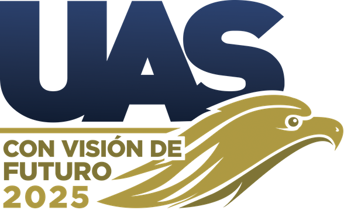

<mat-toolbar color="primary">
  <mat-toolbar-row>
    <a routerLink="/inicio" class="navbar-brand">
      <div class="fondoLogo">
        
      </div>
    </a>
    <div class="fondoLogo2">
      
    </div>
  </mat-toolbar-row>
</mat-toolbar>
<div class="bluebar">
  <h1>UNIVERSIDAD AUTONOMA DE SINALOA</h1>
</div>
<div class="goldbar"></div>
